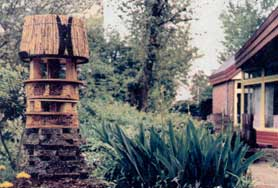

Small gardens require optimal use of space. That's why Hans Carlier, a natural-garden designer in Zutphen, Holland, developed this useful and visually appealing animal tower. He tells how to build a garden house in which a variety of animals, such as birds, bats, bees and hedgehogs, can find a good home during all seasons.
The tower is built around a pole and has an underground home for hedgehogs (or whatever American counterpart you wish to entertain). Hans says this lower space becomes a handy co-housing unit for toads, frogs and all manner of creeping creatures as well.
On top of this basement level, he made a pile of bricks and stone in which insects like bumblebees can make their nests. This is topped by rings of plywood with bundles of reeds in between to provide apartment space for other helpful insects.
The rings are covered with a table for winter feeding of birds, and the entire tower is topped by an attic where birds or bats can make their homes. The external walls of the avian apartments are covered with decorative rush matting. The crown on this elaborate, sculptural-looking tower is a bird bath, surrounded by drought-resistant sedum plants. Hans reports that, summer or winter, something interesting is always happening in and around his rustic critter tower.
|
 PHOTO COURTESY HANS CARLIER This garden tower provides shelter for birds, bees, bats, and hedgehogs. |
|
|